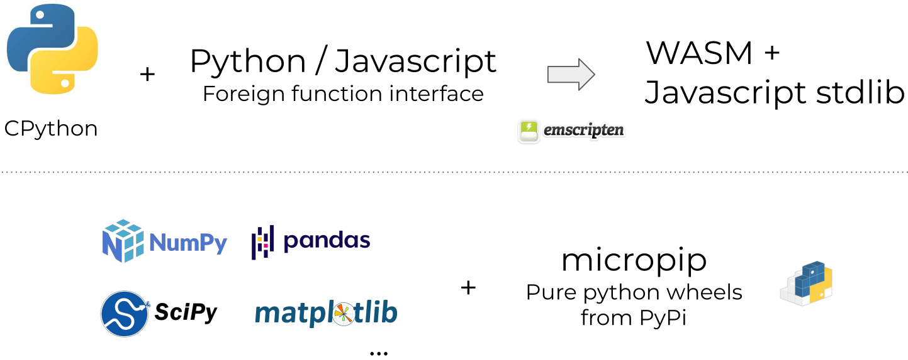

<!DOCTYPE html>
<html lang="en">
  <head>
    <meta charset="utf-8" />
    <meta name="viewport" content="width=device-width, initial-scale=1.0, maximum-scale=1.0, user-scalable=no" />

    <title>My foray from Scientific Python into the Pyodide / WebAssembly universe</title>
    <link rel="shortcut icon" href="./favicon.ico" />
    <link rel="stylesheet" href="./dist/reset.css" />
    <link rel="stylesheet" href="./dist/reveal.css" />
    <link rel="stylesheet" href="./dist/theme/solarized.css" id="theme" />
    <link rel="stylesheet" href="./css/highlight/base16/zenburn.css" />

    <link rel="stylesheet" href="./_assets/custom.css" />

  </head>
  <body>
    <div class="reveal">
      <div class="slides"><section  data-markdown><script type="text/template">


<h2 style="text-align: center">
My foray from Scientific Python into the Pyodide / WebAssembly universe
</h2>


<div style="text-align: center; margin-top: 5em">
<h3 style="text-align: center; margin-left: 0; margin-top: 50px">
Loïc Estève
</h3>

<code>@lesteve</code>
</div>

<div style="text-align: center; margin-top: 50px">
  
</div>

</script></section><section  data-markdown><script type="text/template">

## About me

<div class="fragment">Particle Physics background</div>
<div class="fragment step-fade-in-then-out" style="font-size: 80%">PhD main achievement: measure a cos and a sin +/- 0.8</div>

<div class="fragment">3 years in finance</div>
<div class="fragment step-fade-in-then-out" style="font-size: 80%">mainly C++ and as much Python as I could</div>

<div style="text-align: center margin-top: 120px" class="fragment">
    <div>8 years @ Inria open-source Python</div>
    
    
    
    
</div>
<div style="text-align: center margin-top: 120px" class="fragment">
    <div>Last 2 years scikit-learn MOOC instructor</div>
</div>

</script></section><section  data-markdown><script type="text/template">

## Foray?

> the act of an army suddenly and quickly entering the area belonging to the enemy in order to attack them or steal their supplies
<!-- .element class="fragment" -->
> a brief attempt at or involvement in an activity outside a person’s usual range of activities
<!-- .element class="fragment" -->

a bit outside my comfort zone, but it's been quite fun nonetheless!
<!-- .element class="fragment" -->

<small>"incursion" in French sounded about right</small>
<!-- .element class="fragment" -->

</script></section><section  data-markdown><script type="text/template">

## Outline

- Pyodide / WebAssembly overview
- status of numpy, scipy and scikit-learn in Pyodide
- improving Pyodide by packaging OpenBLAS
- making scikit-learn documentation more interactive by using JupyterLite

</script></section><section ><section data-markdown><script type="text/template">

## Brief WebAssembly / Pyodide overview



<!-- .element class="fragment" -->
</script></section><section data-markdown><script type="text/template">

## Why you should care?

Two main use cases where Pyodide is useful:
- **tutorials / education**: no need to install anything for the user, computation happens inside the browser, no need to have a complicated server setup
- **simple web application** where it is convenient to use Python

CPython cares about WebAssembly: Tier 3 support (maybe soonish Tier 2)
<small>https://discuss.python.org/t/status-of-wasm-in-cpythons-main-branch/15542</small>

</script></section><section data-markdown><script type="text/template">

## Projects using Pyodide

- PyScript

```html
<html>
...
  <py-script> print('Hello world!') </py-script>
</html>
```

- JupyterLite https://jupyterlite.readthedocs.io/, JupyterLab running entirely in your browser
- https://basthon.fr/ using Pyodide has been a game changer for high-school computer science education in France
- plenty of others: stlite (streamlit using Pyodide), thebe-lite (thebe that uses JupyterLite), ...

</script></section><section data-markdown><script type="text/template">

## Personal motivations

Why did I get involved?
<div class="fragment">

- **curiosity**: status of Scientific Python inside Pyodide, what works, what doesn't work, what is completely broken

</div>

<div class="fragment">

- add **interactivity to scikit-learn documentation** with Pyodide / JupyterLite

</div>

<div class="fragment">

- **learn something new** (hopefully both useful and fun) in the process

</div>

</script></section></section><section ><section data-markdown><script type="text/template">

## When things work well

numpy builds and tests Pyodide wheel in their CI since November 2022
https://github.com/numpy/numpy/pull/21895

Work done by Pyodide maintainer Hood Chatham `@hoodmane`

Not too many issues since then it seems!

</script></section><section data-markdown><script type="text/template">

## When things don't work so well (memory corruption)

October 2022 https://github.com/pyodide/pyodide/issues/3203

```py
from scipy import linalg
from sklearn.datasets import make_regression

for i in range(10_000):
    X, y = make_regression(n_features=50, n_informative=10, n_samples=100)
    linalg.lstsq(X, y)
```

<div class="fragment">

Variation of Pyodide fatal errors:
```
RuntimeError: memory access out of bounds
```

</div>

<div class="fragment">

Sometimes nonsensical Python error:
```
SystemError: Type does not define the tp_name field.
```

</div>

Sometimes hangs
<!-- .element class="fragment" -->

This fixed itself somehow in Pyodide 0.22, maybe an Emscripten bug?
<!-- .element class="fragment" -->

</script></section><section data-markdown><script type="text/template">

## When things don't work so well (signature mismatch)

```py
import numpy as np
from scipy.sparse.linalg._svdp import _svdp

np.random.seed(0)
n, k = 70, 10
A = np.random.random((n, n))
_svdp(A, k, kmax=5*k)
```

```
Uncaught RuntimeError: null function or function signature mismatch
```

WebAssembly more picky about types than C compilers e.g. for function pointer casts</br>
<small>https://blog.pyodide.org/posts/function-pointer-cast-handling/</small>

Pyodide bumped into this e.g. in numpy:</br>
<small>
wrong return type of typedef double instead of void: https://github.com/numpy/numpy/pull/20911</br>
comparators defined with 2 arguments instead of 3: https://github.com/numpy/numpy/pull/20833
</small>

Deterministic but time-consuming to investigate and fix

</script></section><section data-markdown><script type="text/template">

## Running the test suite in Pyodide

- js wrapper (runnable with Node.js) that uses Pyodide API `pyodide.runPython` to run pytest inside Pyodide
- Pyodide fatal error crashes the Python interpreter ⇒ Python script that
  execute the js script for each submodule
- check each submodule vs expectation
  (pass, fail, Pyodide fatal error, etc ...)
- conftest.py to skip (memory corruption, takes too long) or xfail (Pyodide
  limitations) some tests

CI run regularly against Pyodide development version to catch regressions

https://github.com/lesteve/scipy-tests-pyodide</br>
https://github.com/lesteve/scikit-learn-tests-pyodide

</script></section><section data-markdown><script type="text/template">

## scikit-learn summary

**scikit-learn test suite passes** with Pyodide development version 0.24.0.dev0
since April 2023

Some tests xfailed due to Pyodide limitations:
- no processes, no threads
- memmap not fully supported
- no floating point exceptions in WebAssembly, e.g. no division by zero warning or error from numpy</br><small>can be an issue e.g. https://github.com/scipy/scipy/pull/13265</small>
- `importlib.import_module` / `__import__` not working for Pyodide packages

https://github.com/lesteve/scikit-learn-tests-pyodide

When Pyodide 0.24 is released build & test a Pyodide wheel in scikit-learn CI

</script></section><section data-markdown><script type="text/template">

## scipy summary

- scipy.integrate 30+ failures
- scipy.interpolate 2 failures
- scipy.linalg almost passes</br><small>signature mismatches when using complex numbers and in LAPACK larfg</small>
- scipy.optimize memory corruption with minpack
- scipy.sparse almost passes</br><small>signature mismatch with propack</small>
- scipy.special.tests 3 failures
- scipy.stats.tests 160+ failures

https://github.com/lesteve/scipy-tests-pyodide

Help more than welcome!

</script></section><section data-markdown><script type="text/template">

## Why is it (a lot) harder for scipy?

- no Fortran compiler that targets WebAssembly
- Pyodide approach: use f2c + compile generated .c files to WebAssembly
- scipy patches + custom Pyodide hacks before and after running f2c (e.g. non
  Fortran 77 code or "fixing" f2c generated signature)
- different layers of code generation with f2c, f2py, cython, ... ⇒ painful to
  understand what is going on and time-consuming to fix
- compile + test feed-back loop ~20 minutes

Hoping LFortran will be able to compile all of Scipy and save Pyodide from f2c
hacks 🤞</br><small>https://github.com/lfortran/lfortran/issues/1377<small>

</script></section><section data-markdown><script type="text/template">

## OpenBLAS packaging work

- Pyodide until 0.23 (current stable version) used CLAPACK (f2ced files from LAPACK) unmaintained
- OpenBLAS has a f2ced files too but maintained + supports compiling without Fortran compiler
- switch to OpenBLAS may get rid of some scipy issues 🤞 + more maintainable

</script></section><section data-markdown><script type="text/template">

## OpenBLAS packaging work

- build an OpenBLAS Pyodide shared library, OpenBLAS fixed some issues with their f2ced LAPACK files
<!-- .element class="fragment" -->
- get scipy to import. Plenty of errors due to type mismatch between symbols imported/exported in different shared libraries, not straightforward to diagnose, time-consuming to fix
<!-- .element class="fragment" -->
- make sure there are no regression compared to CLAPACK
<!-- .element class="fragment" -->
- try to remember the reasons for all the hacks + clean-up
<!-- .element class="fragment" -->
- 100+ commits over 4 months with plenty of help from Pyodide maintainers
<!-- .element class="fragment" -->
- using OpenBLAS last piece to make scikit-learn tests pass 🥳
<!-- .element class="fragment" -->

</script></section></section><section ><section data-markdown><script type="text/template">

## JupyterLite button work

sphinx-gallery generates examples gallery of matplotlib, scikit-learn, scikit-image ...

JupyterLite button is available since sphinx-gallery 0.13 (released April 2023)


scikit-learn documentation is already using it, scikit-image almost

</script></section><section data-markdown><script type="text/template">

## JupyterLite button work

`notebook_modification_function` to have JupyterLite-specific modification,
based on notebook filename or content e.g.:
- add warning markdown cell to say this is beta or "this example will not work in JupyterLite"
- add `%pip install` for packages that are not part of Pyodide e.g. seaborn
- use `pyodide-http` to patch `urllib` and `requests` and make datasets download
- early import of some packages
- scikit-image: change the dataset registry to use CORS proxy

</script></section><section data-markdown><script type="text/template">

## JupyterLite button future work

Pyodide gives you a fixed version of scikit-learn, e.g. Pyodide 0.23 gives you
scikit-learn 1.2.2 (latest scikit-learn release is 1.3)

See https://pyodide.org/en/stable/usage/packages-in-pyodide.html for your favourite package

We can build a scikit-learn Pyodide wheel with `pyodide-build` but no great place to put it for now:
- PyPI doesn't allow WebAssembly wheel (needs a PEP)
- anaconda.org would be a good place but for now no CORS headers, may be a
  limitation with CORS and HTTP redirects
- github repo is possible (jsdevlivr.net CORS proxy) but needs custom CI infra work, postponed for now

</script></section></section><section  data-markdown><script type="text/template">

## Take away messages

- Consider JupyterLite for your next tutorial!
<!-- .element class="fragment" -->
- sphinx-gallery has a JupyterLite button, try it for your package!
<!-- .element class="fragment" -->
- packaging OpenBLAS helped solve tricky Pyodide issues and improved maintainability
<!-- .element class="fragment" -->
- scikit-learn tests pass with Pyodide development version 0.24.0.dev0
<!-- .element class="fragment" -->
- Scipy working well enough for scikit-learn but still plenty of issues ...
  counting on LFortran to save Pyodide from f2c hacks 🤞
<!-- .element class="fragment" -->

</script></section><section  data-markdown><script type="text/template">

</script></section><section  data-markdown><script type="text/template">

## Bonus suprises from my experience using Pyodide

- first import takes time even with Pyodide wheels cached, scipy (3-5s) scikit-learn (5-10s).
  Chromium faster than Firefox for this.
- some packages are not available, if pure Python wheel you can do `%pip
  install` in your notebook, otherwise complexity depends a lot on your package
- urrlib or requests based on sockets and don't work inside a browser (cryptic
  error). Use pyodide-http to patch urllib and/or requests to use js fetch. But
  needs CORS headers or CORS proxy.
- when things go wrong look at your browser console (more trustable than the Python console output)
- Pyodide wheels are big don't try it on your phone with a bad network
- Pyodide limited to 2GB RAM in part because it uses wasm32 (32-bit architecture)
- only top-level imports work magically (i.e. not inside a function unless imported already)

</script></section><section  data-markdown><script type="text/template">

<!-- TODO add class fragment in long bullet points ... -->
</script></section></div>
    </div>

    <script src="./dist/reveal.js"></script>

    <script src="./plugin/markdown/markdown.js"></script>
    <script src="./plugin/highlight/highlight.js"></script>
    <script src="./plugin/zoom/zoom.js"></script>
    <script src="./plugin/notes/notes.js"></script>
    <script src="./plugin/math/math.js"></script>
    <script>
      function extend() {
        var target = {};
        for (var i = 0; i < arguments.length; i++) {
          var source = arguments[i];
          for (var key in source) {
            if (source.hasOwnProperty(key)) {
              target[key] = source[key];
            }
          }
        }
        return target;
      }

      // default options to init reveal.js
      var defaultOptions = {
        controls: true,
        progress: true,
        history: true,
        center: true,
        transition: 'default', // none/fade/slide/convex/concave/zoom
        slideNumber: true,
        plugins: [
          RevealMarkdown,
          RevealHighlight,
          RevealZoom,
          RevealNotes,
          RevealMath
        ]
      };

      // options from URL query string
      var queryOptions = Reveal().getQueryHash() || {};

      var options = extend(defaultOptions, {"height":700,"width":1240,"transition":"none","controls":true,"progress":true,"history":true,"center":false,"slideNumber":false,"rollingLinks":false,"keyboard":true,"mouseWheel":false,"fragmentInURL":false,"hashOneBasedIndex":false,"pdfSeparateFragments":true,"overview":true}, queryOptions);
    </script>


    <script>
      Reveal.initialize(options);
    </script>
  </body>
</html>
